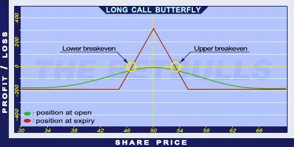

Description and use
Long Call Butterfly is the opposite of Short Call Butterfly strategy. This strategy is popular, even though it is a net debit investment. The popularity is from the attractive risk/profit ratio. To establish the position, the trader has to buy a lower strike Long Call, sell two middle ATM Short Calls, and buy a higher strike OTM Long Call. The Long Puts guarantee the limited risk. The investor can profit from increasing share prices or the share prices moving within given limits. Despite the attractive risk/profit ratio, the maximum profit is limited. The direction of the market is neutral. The investor speculates on shares with low volatility and small price changes. The expected profit is relatively high, given the low costs. The expiration should be at least three months.
- Type: Neutral
- Transaction type: Debit
- Maximum profit: Limited
- Maximum loss: Limited
- Strategy: Neutral strategy
Opening the Position
Long Call Butterfly Option Positions
- Buy a lower strike (ITM) Call option.
- Sell two middle (ATM) Call options.
- Buy a higher strike (OTM) Call option.
All options must have the same expiration. The strategy contains only Call options. The difference of consecutive options’ strike prices must be equal. The risk is maximised if the share price is around the middle components’ strike price at expiration.
Steps
Entry:
- Look for shares showing pennant or similar shapes on charts.
Exit:
- The position can be closed only before expiration.
Basic Characteristics
- Maximum loss: Net debit.
- Maximum profit: Difference of two consecutive strike prices - Net debit.
- Time decay: Time decay has a positive effect on the value when the position is profitable, and a negative effect when the position is lossmaking.
- Lower breakeven point: Lower strike price + Net Credit.
- Upper breakeven point: Higher strike price - Net Credit.
Advantages and Disadvantages
Advantages:
- The investor can profit from share prices moving within given limits.
- Low costs.
- Relatively high risk/profit ratio.
Disadvantages:
- Potentially higher profit is only possible close to expiration.
- Limited profit.
Closing the Position
Buy back the Short Puts and sell the Long Puts.
Mitigation of Losses
Close the position the above-mentioned way.
Example

Long Call Butterfly strategy example with ABCD traded for $50.00 on 17.05.2017. The investor engages in the following:
- Buy a Long Call option with a strike price of $45.00, expiring in June 2017, for a premium of $6.12.
- Sell two Short Call options with a strike price of $50.00, expiring in June 2017, for a premium of $3.07 each.
- Buy another Long Call option with a strike price of $55.00, expiring in June 2017, for a premium of $1.30.
- Net debit: $1.28
- Maximum loss: $1.28
- Maximum profit: $3.72
- Lower breakeven point: $46.28
- Upper breakeven point: $53.72